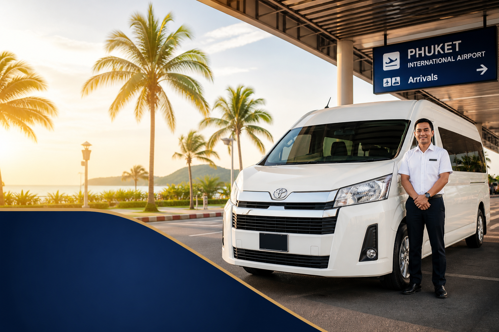

คู่มือรถตู้ภูเก็ต
รถตู้ภูเก็ต ราคาเท่าไร คิดอย่างไร
คู่มือราคารถตู้ภูเก็ต ปัจจัยที่มีผลต่อค่าใช้จ่าย ประเภทบริการรับส่งสนามบิน เหมาครึ่งวัน เต็มวัน และข้ามจังหวัด วิธีขอใบเสนอราคา เช็คลิสต์ก่อนจอง
26 สิงหาคม 2026

Infinity Transport Phuket — รถตู้ภูเก็ต ราคาเท่าไร คิดอย่างไร เมื่อวางแผนทริปภูเก็ต คำถามที่หลายคนถามก่อนใช้บริการคือ “ราคารถตู้ภูเก็ต ประมาณเท่าไร และคิดอย่างไร” โดยเฉพาะผู้ที่ต้องการ เช่ารถตู้ภูเก็ตพร้อมคนขับ สำหรับรับส่งสนามบิน นำเที่ยวรอบเกาะ หรือทริปข้ามจังหวัด การเข้าใจโครงสร้างราคาช่วยให้เปรียบเทียบตัวเลือกได้อย่างมีเหตุผล ไม่ใช่แค่เลือกตัวเลขที่ต่ำที่สุดโดยไม่ทราบว่ารวมอะไรบ้าง
บทความนี้อธิบาย บริการรถตู้ภูเก็ต และ Phuket Van Service ในมุมมองราคาและการประเมินค่าใช้จ่าย ตั้งแต่ปัจจัยที่มีผล ประเภทบริการยอดนิยม วิธีขอใบเสนอราคา การเปรียบเทียบกับตัวเลือกอื่น เช็คลิสต์ก่อนจอง ไปจนถึงคำถามที่พบบ่อย เพื่อให้ตัดสินใจได้มั่นใจ โดยอ้างอิงราคาตัวอย่างจากเว็บไซต์เท่านั้น และย้ำว่าราคาจริงอาจแตกต่างตามรายละเอียดทริป
คำตอบสั้นสำหรับ Featured Snippet:
ราคารถตู้ภูเก็ต ขึ้นกับรูปแบบบริการ (รับส่งเที่ยวเดียว / เหมาครึ่งวัน / เหมาเต็มวัน / ข้ามจังหวัด) ระยะทาง จำนวนผู้โดยสาร ประเภทรถ และช่วงเวลาเดินทาง ตัวอย่างจาก Infinity Transport & Travel Phuket: รับส่งสนามบินเริ่มต้น 1,000 บาท/เที่ยว เหมาครึ่งวัน 3,000 บาท/6 ชม. เหมาเต็มวัน 4,500 บาท/10 ชม. — ราคาอาจเปลี่ยนแปลงได้ ควรยืนยันกับทีมงานก่อนจอง
สารบัญ
1. ราคารถตู้ภูเก็ตคิดอย่างไร — ภาพรวม
2. ปัจจัยที่มีผลต่อราคารถตู้ภูเก็ต
3. ประเภทบริการและราคาตัวอย่าง
4. วิธีขอใบเสนอราคาให้ตรงทริป
5. เปรียบเทียบตัวเลือกการเดินทางในภูเก็ต
6. เช็คลิสต์ก่อนจองรถตู้ภูเก็ต
7. ทำไมลูกค้าจึงเลือก Infinity Transport & Travel Phuket
8. ข้อควรรู้เรื่องราคาและการประเมินค่าใช้จ่าย
9. คำถามที่พบบ่อย
10. สรุปท้ายบทความ
ราคารถตู้ภูเก็ตคิดอย่างไร — ภาพรวม
รถตู้ภูเก็ต โดยทั่วไปหมายถึงการเช่ารถตู้พร้อมคนขับเพื่อเดินทางแบบส่วนตัว ไม่ใช่การแชร์รถกับกลุ่มอื่น และไม่ใช่การเช่ารถขับเอง ดังนั้น ราคารถตู้ภูเก็ต จึงไม่ได้มีตัวเลขเดียวตายตัวสำหรับทุกทริป แต่คำนวณจากรูปแบบบริการ ระยะทาง จำนวนผู้โดยสาร ประเภทรถ และเงื่อนไขเพิ่มเติม เช่น ช่วงเวลาเดินทางหรือเส้นทางข้ามจังหวัด
ผู้ให้บริการที่โปร่งใสมักแยกราคาตามประเภทบริการหลัก ได้แก่ รับส่งเที่ยวเดียว (เช่น สนามบินไปโรงแรม) เหมาครึ่งวัน เหมาเต็มวัน และทริปข้ามจังหวัด ซึ่งแต่ละแบบมีขอบเขตเวลาและการใช้งานต่างกัน การเข้าใจความต่างนี้ช่วยให้คุณไม่เปรียบเทียบ “ราคาเหมาครึ่งวัน” กับ “ราคารับส่งเที่ยวเดียว” โดยไม่ตั้งใจ
ทำไมราคาจึงไม่เหมือนกันทุกทริป
เส้นทางไม่เท่ากัน สนามบินไปในยาง กับสนามบินไปราไวย์ ใช้เวลาและระยะทางต่างกันรูปแบบบริการต่างกัน รับส่งเที่ยวเดียว vs เหมาครึ่งวัน vs เหมาเต็มวัน มีขอบเขตเวลาและการใช้งานต่างกันจำนวนคนและสัมภาระ มีผลต่อการเลือกรุ่นรถที่เหมาะสมช่วงเวลาเดินทาง ฤดูท่องเที่ยว วันหยุดยาว หรือไฟลท์ดึก อาจมีผลต่อการจัดรถเส้นทางข้ามจังหวัด มักประเมินแยกจากทริปในเขตภูเก็ต
เคล็ดลับ: ก่อนถามราคา ให้ระบุอย่างน้อยสี่อย่าง — วันที่ จุดรับ–ส่ง จำนวนผู้โดยสาร และรูปแบบบริการ (เที่ยวเดียว / ครึ่งวัน / เต็มวัน) — จะช่วยให้ได้ใบเสนอราคาที่ใกล้เคียงความจริงมากขึ้น
ดูแนวทางราคาเบื้องต้นได้ที่ หน้าราคาบริการ ศึกษาบริการรถตู้ได้ที่ หน้ารถตู้ภูเก็ตพร้อมคนขับ และภาพรวมการท่องเที่ยวอ้างอิงได้จาก การท่องเที่ยวแห่งประเทศไทย (ททท.)
ปัจจัยที่มีผลต่อราคารถตู้ภูเก็ต
การประเมิน ราคารถตู้ภูเก็ต ที่แม่นยำต้องดูหลายปัจจัยพร้อมกัน ไม่ใช่แค่ระยะทางอย่างเดียว ด้านล่างคือปัจจัยหลักที่ผู้ให้บริการมักใช้ในการเสนอราคา
1) รูปแบบบริการ
รูปแบบบริการเป็นปัจจัยแรกที่กำหนดโครงสร้างราคา
รูปแบบ ลักษณะโดยทั่วไป สิ่งที่ควรเข้าใจ รับส่งเที่ยวเดียว จุดรับหนึ่งจุด → จุดส่งหนึ่งจุด เหมาะวันมาถึง/วันกลับ หรือเส้นทางตรง เหมาครึ่งวัน ใช้รถตามช่วงเวลาที่ตกลง (เช่น 6 ชม.) เหมาะเที่ยว 2–4 จุดในครึ่งวัน เหมาเต็มวัน ใช้รถตามช่วงเวลาที่ตกลง (เช่น 10 ชม.) เหมาะเที่ยวหลายจุดหรือข้ามโซน ข้ามจังหวัด เส้นทางภูเก็ต ↔ พังงา / กระบี่ ฯลฯ มักประเมินแยกตามระยะทางและเวลา
2) ระยะทางและเส้นทาง
ยิ่งเส้นทางไกลหรือใช้เวลานาน การประเมินราคามักสะท้อนค่าใช้จ่ายด้านเวลาและการใช้รถมากขึ้น ตัวอย่างเช่น รับส่งจากสนามบินไปโซนที่อยู่ใกล้ กับไปโซนฝั่งใต้ของเกาะ อาจได้ราคาที่ต่างกันตามเงื่อนไขของผู้ให้บริการ ข้อมูลทั่วไปของสนามบินดูได้จาก เว็บไซต์ทางการของท่าอากาศยานภูเก็ต
3) จำนวนผู้โดยสารและสัมภาระ
จำนวนคนและปริมาณกระเป๋ามีผลต่อการเลือกรุ่นรถ กลุ่ม 4–6 คนกับกลุ่ม 10–12 คน อาจใช้รถคนละรุ่น ซึ่งมีผลต่อราคา การแจ้งจำนวนกระเป๋าล่วงหน้าช่วยให้ทีมงานจัดรถที่พอดีและไม่ต้องเปลี่ยนแปลงในวันสุดท้าย
4) ประเภทรถ
รถตู้มาตรฐานกับรถระดับ VIP หรือรถที่มีสเปกพิเศษ อาจมีราคาต่างกัน ควรดูรายละเอียดรุ่นรถจริงที่ หน้ารุ่นรถของเรา แล้วสอบถามตามความต้องการของกลุ่ม
5) ช่วงเวลาและฤดูกาล
ช่วงฤดูท่องเที่ยว วันหยุดยาว หรือช่วงที่มีเที่ยวบินหนาแน่น อาจมีผลต่อความพร้อมของรถและการจัดสรรคนขับ แม้ราคาพื้นฐานจะไม่เปลี่ยนเสมอไป การจองล่วงหน้ายังช่วยให้ได้รถที่เหมาะสมกว่าการรอจองในนาทีสุดท้าย
6) จุดแวะและการปรับแผน
ทริปที่มีจุดแวะหลายจุด หรือมีการเปลี่ยนแปลงเส้นทางหลังจอง อาจมีผลต่อการประเมินราคา ควรแจ้งจุดหมายทั้งหมดตั้งแต่ตอนขอใบเสนอราคา
คำคมจากทีมวางแผนทริป:
“ราคาที่ดีไม่ใช่ราคาที่ถูกที่สุดเสมอไป แต่คือราคาที่สะท้อนรายละเอียดทริปจริงและเงื่อนไขที่ชัดเจน”
ประเภทบริการและราคาตัวอย่าง
ด้านล่างคือประเภท บริการรถตู้ภูเก็ต ที่ลูกค้าสอบถามบ่อย พร้อมราคาตัวอย่างจาก Infinity Transport & Travel Phuket ที่แสดงบนเว็บไซต์ ราคาอาจเปลี่ยนแปลงได้ ตามรายละเอียดทริป โซนปลายทาง ประเภทรถ และช่วงเวลา — ควรยืนยันกับทีมงานก่อนจองทุกครั้ง
ตารางราคาตัวอย่างจากเว็บไซต์
ประเภทบริการ ราคาตัวอย่าง ขอบเขตโดยทั่วไป เหมาะกับ รับส่งสนามบิน (Airport Transfer) 1,000 บาท/เที่ยว เที่ยวเดียว จุดรับ → จุดส่ง วันมาถึง / วันกลับ เหมาครึ่งวัน (Half Day) 3,000 บาท/6 ชม. ใช้รถตามช่วงเวลาที่ตกลง เที่ยวรอบเกาะครึ่งวัน เหมาเต็มวัน (Full Day) 4,500 บาท/10 ชม. ใช้รถตามช่วงเวลาที่ตกลง เที่ยวหลายจุด / ข้ามโซน ข้ามจังหวัด (Interprovince) ประเมินตามเส้นทาง ภูเก็ต ↔ พังงา / กระบี่ ฯลฯ ทริปไปเช้า–กลับเย็น
หมายเหตุสำคัญ: ตัวเลขข้างต้นเป็นราคาตัวอย่างจาก หน้าราคาบริการ เท่านั้น ไม่ใช่ราคาตายตัวสำหรับทุกเส้นทาง ราคาอาจเปลี่ยนแปลงได้ ทริปข้ามจังหวัดและเส้นทางพิเศษควรขอใบเสนอราคาเฉพาะทริป
1) รับส่งสนามบิน (Airport Transfer)
รถตู้รับส่งสนามบินภูเก็ต เป็นรูปแบบที่นิยมที่สุด เพราะเป็นจุดเริ่มต้นและจุดสิ้นสุดของทริป ราคาตัวอย่าง 1,000 บาท/เที่ยว ช่วยให้เห็นจุดเริ่มต้นในการวางงบประมาณ แต่โซนปลายทาง จำนวนผู้โดยสาร และประเภทรถอาจมีผลต่อราคาจริง
สิ่งที่ควรแจ้งตอนขอราคา:
เลขเที่ยวบินและเวลาที่คาดว่าจะถึง
ชื่อที่พักหรือที่อยู่ปลายทาง
จำนวนผู้โดยสารและกระเป๋า
2) เหมาครึ่งวัน (Half Day — 6 ชั่วโมง)
เหมาะกับทริปที่อยากเที่ยว 2–4 จุดโดยไม่ฝืนทั้งวัน ราคาตัวอย่าง 3,000 บาท/6 ชม. ให้ขอบเขตเวลาที่ชัดเจน ช่วยวางแผนจุดหมายได้ดีกว่าการเรียกรถหลายเที่ยวแยกกัน
ตัวอย่างการใช้งาน:
เช้า: จุดชมวิว → เมืองเก่า → กลับที่พัก
บ่าย–เย็น: ชายหาด → จุดชมพระอาทิตย์ตก → มื้อเย็น
3) เหมาเต็มวัน (Full Day — 10 ชั่วโมง)
เหมาะกับการเที่ยวหลายจุดในเกาะ หรือทริปที่ต้องการความยืดหยุ่นสูง ราคาตัวอย่าง 4,500 บาท/10 ชม. ให้เวลาเพียงพอสำหรับจัดลำดับเส้นทางโดยไม่ต้องเร่งรีบเกินไป
เคล็ดลับ: อย่าใส่จุดหมายถี่เกินไปในวันเดียว การเที่ยว 3–5 จุดที่คัดแล้ว มักสนุกและเหนื่อยน้อยกว่าการวิ่งหลายจุดแบบเร่งรีบ แม้จะเหมาคันเต็มวัน
4) ข้ามจังหวัด (Interprovince)
ทริปภูเก็ต → พังงา หรือภูเก็ต → กระบี่ มักประเมินแยกจากแพ็กเกจในเขตภูเก็ต เพราะระยะทางและเวลาเดินทางต่างกัน ควรแจ้งจุดหมาย จุดแวะ (ถ้ามี) และเวลาที่ต้องการกลับตั้งแต่ตอนขอใบเสนอราคา
รายละเอียดบริการเพิ่มเติมดูได้ที่ หน้ารวมบริการ และ บริการรถตู้ภูเก็ต
วิธีขอใบเสนอราคาให้ตรงทริป
การขอใบเสนอราคา เช่ารถตู้ภูเก็ตพร้อมคนขับ ที่มีประสิทธิภาพ ควรเตรียมข้อมูลให้ครบตั้งแต่แรก จะช่วยลดการถามไปมาและได้ราคาที่ใกล้เคียงความจริงมากขึ้น
ขั้นตอนขอใบเสนอราคา
1. ระบุวันที่และช่วงเวลา ที่ต้องการใช้บริการ
2. เลือกรูปแบบบริการ — รับส่งเที่ยวเดียว / ครึ่งวัน / เต็มวัน / ข้ามจังหวัด
3. แจ้งจุดรับและจุดส่ง ให้ชัดเจน (ชื่อโรงแรม วิลล่า หรือที่อยู่)
4. ระบุจำนวนผู้โดยสาร รวมเด็กเล็ก
5. แจ้งจำนวนกระเป๋า โดยประมาณ
6. บอกจุดแวะหรือธีมทริป (ถ้ามี) เช่น ชมวิว / เมืองเก่า / หาด
7. แจ้งความต้องการพิเศษ เช่น คาร์ซีท หรือไฟลท์ดึก
8. ยืนยันราคาและเงื่อนไข ก่อนโอนมัดจำ (ถ้ามี)
ตัวอย่างข้อความขอราคา
“สวัสดีครับ/ค่ะ ต้องการ รถตู้ภูเก็ต วันที่ [วันที่] จำนวน [X] คน กระเป๋า [X] ใบ รับจากสนามบิน (เที่ยวบิน [เลขเที่ยวบิน]) ส่งโรงแรม [ชื่อ] ต้องการทริปเหมาเต็มวันวันถัดไป สนใจจุด [A, B, C] ขอใบเสนอราคาครับ/ค่ะ”
ช่องทางติดต่อ Infinity Transport & Travel Phuket
เคล็ดลับ: หากยังไม่แน่ใจว่าควรเลือกครึ่งวันหรือเต็มวัน ให้บอกจุดหมายที่สนใจและเวลาที่มี ทีมงานช่วยแนะนำรูปแบบบริการที่เหมาะสมได้ โดยอ้างอิงราคาตัวอย่างจาก หน้าราคา
เปรียบเทียบตัวเลือกการเดินทางในภูเก็ต
เมื่อพิจารณา ราคารถตู้ภูเก็ต ควรเปรียบเทียบกับตัวเลือกอื่นในมิติที่เกี่ยวข้องกับทริปจริง ไม่ใช่แค่ตัวเลขอย่างเดียว
ตารางเปรียบเทียบตัวเลือก
ตัวเลือก เหมาะกับ จุดเด่น ข้อควรพิจารณาเรื่องราคา แท็กซี่ / แอปเรียกรถ กลุ่มเล็ก ทริปสั้น เรียกง่าย ไม่ต้องจองล่วงหน้า หลายเที่ยวหรือหลายจุดอาจรวมแล้วแพงกว่าเหมาคัน รถเช่าขับเอง คนคุ้นเส้นทาง อิสระสูง ต้องคิดค่าเช่ารถ น้ำมัน ที่จอด ประกัน และความเหนื่อยจากการขับ ทัวร์รวมกลุ่ม คนเดินทางคนเดียว งบต่ำกว่าเหมาคัน ยืดหยุ่นน้อย อาจไม่ตรงจังหวะของกลุ่ม รถตู้ภูเก็ตพร้อมคนขับ ครอบครัว / กลุ่ม / งานธุรกิจ สะดวก วางแผนได้ หารต่อหัวคุ้ม ควรจองล่วงหน้าช่วงฤดูท่องเที่ยว
เมื่อไหร่ที่เหมาคันคุ้มกว่าเรียกรถหลายเที่ยว
เที่ยว 3 จุดขึ้นไปในวันเดียว
มีกระเป๋าใหญ่หลายใบ
มีเด็กเล็กหรือผู้สูงอายุที่ต้องการจังหวะพัก
ต้องการความแน่นอนเรื่องเวลารับ–ส่ง
ทริปข้ามจังหวัดไปเช้า–กลับเย็น
เมื่อไหร่ที่รับส่งเที่ยวเดียวอาจเพียงพอ
วันมาถึง: สนามบิน → โรงแรม
วันกลับ: โรงแรม → สนามบิน
เส้นทางตรงไม่มีจุดแวะ
คำตอบสั้นสำหรับ Featured Snippet:
ราคารถตู้ภูเก็ต มักคุ้มกว่าเมื่อเดินทางเป็นกลุ่ม มีหลายจุดแวะ หรือต้องการความแน่นอน ส่วนทริปสั้นกลุ่มเล็กอาจใช้แท็กซี่ได้ แต่ควรเปรียบเทียบราคารวมของทั้งวัน ไม่ใช่แค่เที่ยวแรก
ดูรุ่นรถและจำนวนที่นั่งได้ที่ หน้ารุ่นรถ และเริ่มต้นจาก หน้าแรก Infinity Transport & Travel Phuket
เช็คลิสต์ก่อนจองรถตู้ภูเก็ต
ก่อนยืนยันการจอง บริการรถตู้ภูเก็ต ใช้เช็คลิสต์ด้านล่างเพื่อให้มั่นใจว่ารายละเอียดและราคาตรงกับที่ตกลง
เช็คลิสต์ข้อมูลก่อนจอง
วันที่และช่วงเวลาใช้บริการชัดเจน
รูปแบบบริการตกลงแล้ว (เที่ยวเดียว / ครึ่งวัน / เต็มวัน / ข้ามจังหวัด)
จุดรับและจุดส่งระบุครบ
จำนวนผู้โดยสารและกระเป๋าแจ้งแล้ว
รุ่นรถเหมาะกับกลุ่ม (ตรวจจาก หน้ารุ่นรถ )
ราคาที่ได้รับสอดคล้องกับ หน้าราคา และรายละเอียดทริป
ทราบว่าราคารวมอะไรบ้าง และไม่รวมอะไรบ้าง
เงื่อนไขการเปลี่ยนแปลงหรือยกเลิกชัดเจน
มีช่องทางติดต่อคนขับหรือทีมงานในวันเดินทาง
หากเป็นรับส่งสนามบิน แจ้งเลขเที่ยวบินแล้ว
สิ่งที่ควรถามก่อนโอนเงิน
1. ราคานี้ครอบคลุมคนขับและค่าน้ำมันในเขตที่ตกลงหรือไม่
2. มีค่าใช้จ่ายเพิ่มเติมที่อาจเกิดขึ้นหรือไม่ (เช่น ทางด่วน ที่จอดพิเศษ)
3. หากเที่ยวบินล่าช้า มีนโยบายอย่างไร
4. สามารถปรับจุดแวะในขอบเขตที่ตกลงได้หรือไม่
5. ราคานี้ อาจเปลี่ยนแปลงได้ หรือไม่ หากรายละเอียดทริปเปลี่ยน
สิ่งที่ควรหลีกเลี่ยง
จองจากราคาโปรโมชันที่ไม่ระบุเงื่อนไข
โฟกัสแค่ราคาต่ำสุดโดยไม่ถามรายละเอียด
ไม่แจ้งจำนวนกระเป๋า จนวันจริงพื้นที่ไม่พอ
ไม่เก็บหลักฐานการตกลงราคาเป็นลายลักษณ์อักษร
เคล็ดลับ: เก็บสรุปรายละเอียดการจอง (วันที่ ราคา จุดรับ–ส่ง ช่องทางติดต่อ) ไว้ในโทรศัพท์ จะช่วยลดความสับสนในวันเดินทาง
ทำไมลูกค้าจึงเลือก Infinity Transport & Travel Phuket
Infinity Transport & Travel Phuket ให้ Phuket Van Service และ บริการรถตู้ภูเก็ต สำหรับนักท่องเที่ยวและผู้เดินทางที่ต้องการความสะดวกในเส้นทางภูเก็ตและจังหวัดใกล้เคียง จุดเน้นของเราคือการสื่อสารที่ชัดเจน การประเมินราคาตามรายละเอียดทริปจริง และการเตรียมความพร้อมก่อนวันเดินทาง
สิ่งที่ทีมงานให้ความสำคัญ
ประเมินราคาตามข้อมูลทริปจริง ไม่ใช่การยัดแพ็กเกจที่ไม่จำเป็นอ้างอิงราคาตัวอย่างจากเว็บไซต์ และยืนยันราคาสุดท้ายก่อนจองสรุปรายละเอียดให้เข้าใจง่าย ทั้งจุดรับ–ส่ง เวลา และรูปแบบบริการช่วยแนะนำรูปแบบบริการ ว่าควรเลือกรับส่งเที่ยวเดียว ครึ่งวัน หรือเต็มวันมีช่องทางติดต่อหลายทาง เพื่อสอบถามและอัปเดตแผนได้สะดวก
ราคาตัวอย่างจาก Infinity Transport & Travel Phuket
บริการ ราคาตัวอย่าง หมายเหตุ รับส่งสนามบิน 1,000 บาท/เที่ยว ราคาอาจเปลี่ยนแปลงได้ เหมาครึ่งวัน 3,000 บาท/6 ชม. ราคาอาจเปลี่ยนแปลงได้ เหมาเต็มวัน 4,500 บาท/10 ชม. ราคาอาจเปลี่ยนแปลงได้
เราไม่สรุปผลจากตัวเลขหรือรีวิวที่ไม่ได้ยืนยันในหน้านี้ แต่เชิญให้สอบถามรายละเอียดตามทริปของคุณโดยตรง เพื่อรับคำแนะนำและราคาที่ตรงกับวันเดินทาง จำนวนผู้โดยสาร และจุดหมายจริง
เริ่มดูบริการได้ที่ หน้ารวมบริการ ศึกษารถตู้โดยเฉพาะที่ หน้ารถตู้ภูเก็ต และดูพาหนะเพิ่มเติมที่ หน้ารุ่นรถ
ข้อควรรู้เรื่องราคาและการประเมินค่าใช้จ่าย
การเข้าใจ ราคารถตู้ภูเก็ต อย่างรอบคอบช่วยให้วางแผนงบประมาณได้ดีขึ้น โดยไม่ต้องพึ่งตัวเลขที่ไม่มีที่มาชัดเจน
สิ่งที่ควรตรวจสอบในใบเสนอราคา
รูปแบบบริการ ตรงกับที่ต้องการหรือไม่ขอบเขตเวลา (กี่ชั่วโมง เริ่ม–จบเมื่อไหร่)จุดรับ–ส่ง ครบถ้วนหรือไม่ประเภทรถ ตรงกับจำนวนคนและกระเป๋าหรือไม่สิ่งที่รวมในราคา เช่น คนขับ ค่าน้ำมันในเขตที่ตกลงสิ่งที่ไม่รวม เช่น ค่าเข้าสถานที่ มื้ออาหาร ทิป (ถ้ามีนโยบาย)
วิธีวางงบประมาณทริปอย่างสมเหตุสมผล
1. แยกงบรับส่งสนามบิน (ขาเข้า + ขาออก) จากงบเที่ยวรอบเกาะ
2. เลือกครึ่งวันหรือเต็มวัน ตามจำนวนจุดที่อยากไป ไม่ใช่เลือกเต็มวันเพราะ “น่าจะคุ้ม” โดยไม่ใช้เวลา
3. หารราคาต่อหัว เมื่อเดินทางเป็นกลุ่ม จะเห็นภาพชัดว่าคุ้มแค่ไหน
4. เผื่องบสำรอง สำหรับการปรับแผนหรือค่าใช้จ่ายส่วนตัว
5. ยืนยันราคาก่อนจอง เพราะ ราคาอาจเปลี่ยนแปลงได้ ตามรายละเอียดทริป
หลักการ E-E-A-T ที่เราใช้ในการให้ข้อมูลราคา
Experience (ประสบการณ์): อธิบายจากรูปแบบบริการที่ให้จริงในพื้นที่ภูเก็ตExpertise (ความเชี่ยวชาญ): แยกประเภทบริการและปัจจัยราคาอย่างเป็นระบบAuthoritativeness (ความน่าเชื่อถือ): อ้างอิงราคาตัวอย่างจาก หน้าราคา เท่านั้นTrustworthiness (ความไว้วางใจ): ย้ำว่าราคาอาจเปลี่ยนแปลงได้ และควรยืนยันก่อนจอง
คำคม:
“งบประมาณที่ดีไม่ใช่งบที่ต่ำที่สุด แต่เป็นงบที่สะท้อนแผนทริปจริงและไม่มีค่าใช้จ่ายแอบแฝงที่ไม่ได้คาดไว้”
สรุปท้ายบทความ
รถตู้ภูเก็ต เป็นตัวเลือกที่สะดวกสำหรับการเดินทางแบบส่วนตัวในภูเก็ต ไม่ว่าจะรับส่งสนามบิน นำเที่ยวรอบเกาะ หรือทริปข้ามจังหวัด ราคารถตู้ภูเก็ต ไม่มีตัวเลขเดียวตายตัว แต่ขึ้นกับรูปแบบบริการ ระยะทาง จำนวนผู้โดยสาร ประเภทรถ และรายละเอียดทริป
จากราคาตัวอย่างบนเว็บไซต์ Infinity Transport & Travel Phuket: รับส่งสนามบิน 1,000 บาท/เที่ยว เหมาครึ่งวัน 3,000 บาท/6 ชม. เหมาเต็มวัน 4,500 บาท/10 ชม. — ราคาอาจเปลี่ยนแปลงได้ ควรยืนยันกับทีมงานก่อนจองทุกครั้ง
ก่อนจอง ควรเตรียมวันที่ จุดรับ–ส่ง จำนวนผู้โดยสาร และรูปแบบบริการ จากนั้นใช้เช็คลิสต์ในบทความนี้ตรวจสอบใบเสนอราคา เปรียบเทียบตัวเลือกอย่างมีเหตุผล และอ้างอิงข้อมูลจาก หน้าราคา และ หน้าติดต่อ เพื่อให้ได้ บริการรถตู้ภูเก็ต ที่ตรงกับทริปจริง
ติดต่อเรา (CTA)
กำลังมองหา รถตู้ภูเก็ต พร้อมคนขับและอยากทราบ ราคารถตู้ภูเก็ต ที่ตรงกับทริปของคุณใช่ไหม?
ทีมงาน Infinity Transport & Travel Phuket พร้อมให้คำแนะนำเรื่องเส้นทาง ประเมินราคา และช่วยวางแผนการเดินทางให้เหมาะกับคุณ ติดต่อเราได้ผ่าน LINE หรือโทรหาเราได้ทันที
จองรถตู้ภูเก็ต
กลับไปหน้าบทความทั้งหมด
คำถามที่พบบ่อย (FAQ) ราคารถตู้ภูเก็ตเริ่มต้นเท่าไร จากราคาตัวอย่างบนเว็บไซต์ Infinity Transport & Travel Phuket รับส่งสนามบินเริ่มต้น 1,000 บาท/เที่ยว เหมาครึ่งวัน 3,000 บาท/6 ชม. เหมาเต็มวัน 4,500 บาท/10 ชม. — ราคาอาจเปลี่ยนแปลงได้ ตามรายละเอียดทริป ดูข้อมูลล่าสุดที่ หน้าราคา
ราคารถตู้ภูเก็ตคิดต่อคนหรือต่อคัน โดยทั่วไป เช่ารถตู้ภูเก็ตพร้อมคนขับ มักคิดเป็นราคาต่อคันหรือต่อทริป ไม่ใช่ต่อคน การหารต่อหัวในกลุ่มจึงมักทำให้คุ้มค่าเมื่อเดินทางหลายคน
รับส่งสนามบิน 1,000 บาท รวมอะไรบ้าง ราคาตัวอย่าง 1,000 บาท/เที่ยว เป็นแนวทางจากเว็บไซต์ รายละเอียดที่รวมและไม่รวมควรยืนยันกับทีมงานก่อนจอง เพราะอาจแตกต่างตามโซนปลายทางและประเภทรถ
เหมาครึ่งวันกับเต็มวันต่างกันอย่างไร เหมาครึ่งวัน (ตัวอย่าง 3,000 บาท/6 ชม. ) เหมาะทริปสั้น ๆ ส่วนเหมาเต็มวัน (ตัวอย่าง 4,500 บาท/10 ชม. ) เหมาะเที่ยวหลายจุดหรือข้ามโซน ทั้งสองแบบมีขอบเขตเวลาที่ตกลงกัน
ทริปข้ามจังหวัดราคาเท่าไร ทริปข้ามจังหวัด เช่น ภูเก็ต → พังงา หรือภูเก็ต → กระบี่ มักประเมินแยกจากแพ็กเกจในเขตภูเก็ต ควรขอใบเสนอราคาเฉพาะทริปพร้อมจุดหมายและเวลาที่ต้องการ
ราคาเปลี่ยนตามโซนที่พักหรือไม่ อาจมีผล โดยเฉพาะรับส่งสนามบิน ระยะทางไปโซนต่าง ๆ ของเกาะต่างกัน ควรแจ้งชื่อที่พักหรือที่อยู่ปลายทางตอนขอราคา
ต้องจองล่วงหน้ากี่วัน ช่วงปกติสามารถสอบถามล่วงหน้า 1–2 วันได้ แต่ช่วงฤดูท่องเที่ยว วันหยุดยาว หรือทริปข้ามจังหวัด แนะนำให้ติดต่อเร็วขึ้นเมื่อทราบวันเดินทาง
มีบริการ VIP ราคาแตกต่างจากมาตรฐานหรือไม่ รถระดับ VIP หรือรถที่มีสเปกพิเศษอาจมีราคาต่างจากรถมาตรฐาน ดูตัวเลือกรถได้ที่ หน้ารุ่นรถ แล้วสอบถามราคาตามความต้องการ
จองผ่านช่องทางไหนได้บ้าง ติดต่อได้ผ่านโทรศัพท์ 062 664 4542 , LINE ที่ https://line.me/ti/p/HOu32mNzEG , อีเมล infinitytransporttravel@gmail.com หรือผ่าน หน้าติดต่อ
หากต้องการเปลี่ยนแผนหลังจอง ราคาเปลี่ยนหรือไม่ การเปลี่ยนแปลงอาจมีผลต่อราคาหากรายละเอียดทริปเปลี่ยน เช่น เพิ่มจุดแวะหรือเปลี่ยนรูปแบบบริการ แนะนำให้แจ้งทีมงานทันทีและยืนยันราคาใหม่ก่อนดำเนินการ
ไฟลท์ดึกหรือเดินทางกลางคืนราคาเพิ่มหรือไม่ ขึ้นกับรายละเอียดการจองและช่วงเวลา ควรแจ้งเวลาที่คาดว่าจะถึงตั้งแต่ตอนขอใบเสนอราคา เพื่อให้ทีมงานประเมินได้ถูกต้อง
ทำไมราคาที่ถามจากที่หนึ่งต่างจากอีกที่หนึ่ง เพราะรายละเอียดทริป ประเภทรถ เงื่อนไขที่รวมในราคา และช่วงเวลาอาจต่างกัน ควรเปรียบเทียบในข้อมูลเดียวกัน ไม่ใช่แค่ตัวเลข